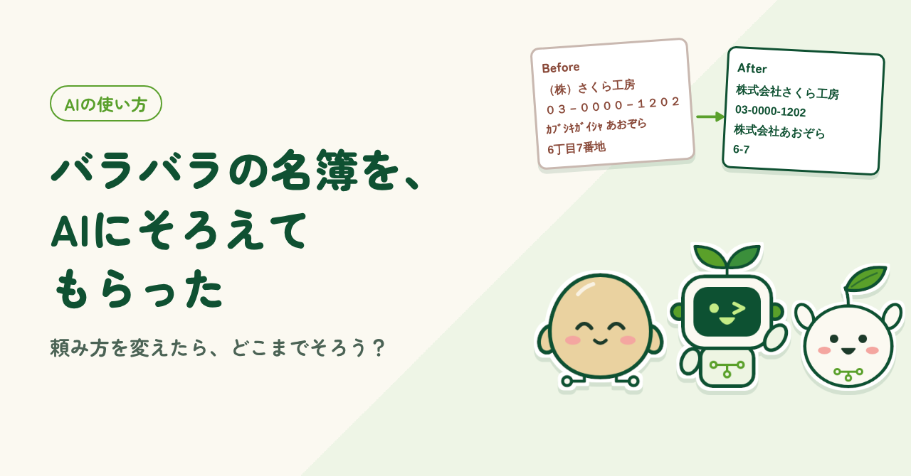
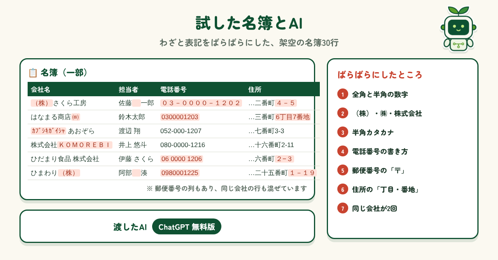
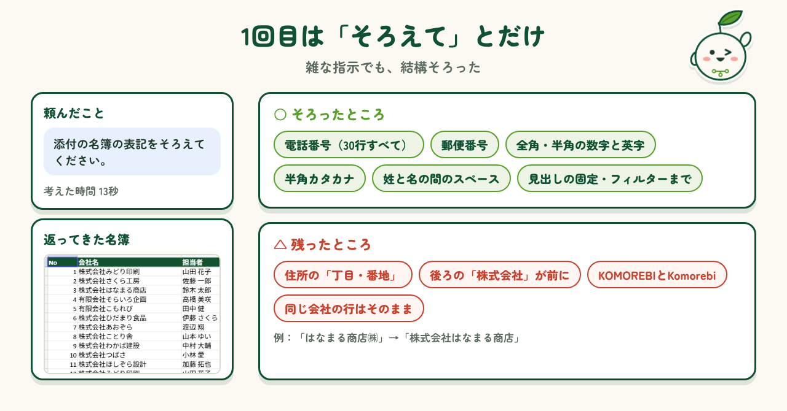
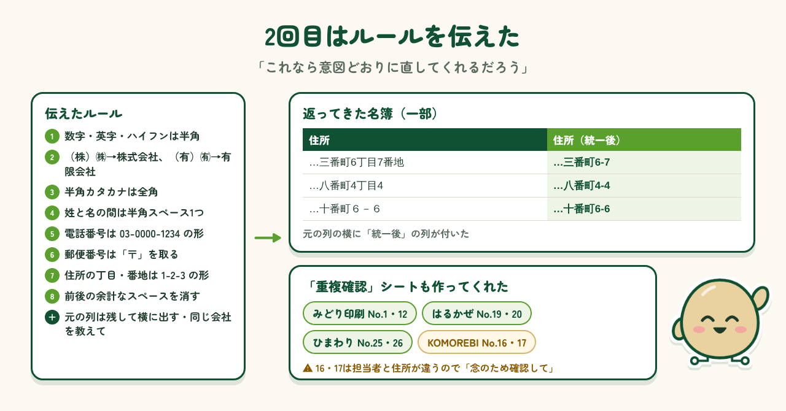
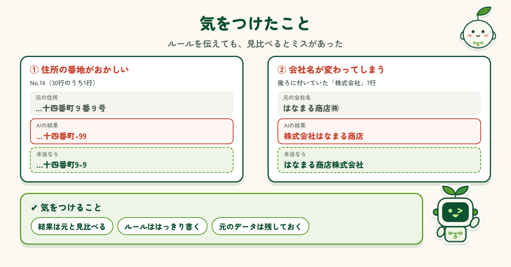

2026.11.16 公開
バラバラの名簿を、AIにそろえてもらった
表記がばらばらの名簿30行を、AIにそろえてもらえるか試しました。頼み方でどう変わったかと、確かめるときのコツを紹介します。

はじめに
名簿の表記がばらばらだと、検索しても見つからなかったり、並べ替えがうまくいかなかったりします。依頼サイトでも、名簿やリストの表記をそろえる仕事をよく見かけます。手で1件ずつ直すのは、正直うんざりする作業です。そこで今回は、ばらばらの名簿をAIに渡して、どこまでそろえてくれるのか試してみました。半分は期待しながらの挑戦です。
試した名簿とAI
試したのは、わざと表記をばらばらにした架空の名簿30行です。会社名には「（株）」「㈱」「株式会社」が混ざり、数字は全角と半角がばらばら。半角カタカナや、かっこやスペースの入った電話番号、「〒」が付いたり付かなかったりする郵便番号、「6丁目7番地」のような住所も入れました。同じ会社が2回出てくる行も混ぜています。この名簿を、ChatGPTの無料版に渡しました。

1回目は「そろえて」とだけ頼んだ
まずは名簿を添付して、「添付の名簿の表記をそろえてください」とだけ頼みました。正直、あまり期待はしていませんでした。ところが13秒ほどで、電話番号と郵便番号は30行すべてそろい、全角の数字や半角カタカナも直っていました。見出しの固定やフィルターまで付けてくれています。雑な指示のわりに、結構そろえてくれたという印象です。ただ、住所の「6丁目7番地」はそのまま。会社名の後ろに付いていた「株式会社」も、すべて前に移されていました。

2回目はルールを伝えた
そこで2回目は、そろえ方のルールを8つ書いて頼みました。「（株）や㈱は株式会社に」「住所の丁目や番地は1-2-3の形に」といった具合です。さらに、元の列は残して横に結果を出すこと、同じ会社が2回出てくる行を教えることもお願いしました。これなら意図どおりに直してくれるだろう、と思っていました。結果は、元の列の横に「統一後」の列が付き、住所の「6丁目7番地」も「6-7」に。別のシートで、同じ会社の行も4組見つけてくれました。

気をつけたこと
ところが、元の名簿と1行ずつ見比べると、ミスが見つかりました。「十四番町９番９号」が「十四番町-99」になっていたのです。本当なら「9-9」です。また、「はなまる商店㈱」のように後ろに付いていた「株式会社」は、2回目も前に移されていました。これでは本当の会社名が変わってしまいます。ルールに「位置はそのまま」と書かなかったのも原因です。AIに任せたあとは結果を元と見比べること、ルールははっきり書くことが大切だと感じました。

まとめ
「そろえて」とひと言頼むだけでも、AIは名簿の多くをそろえてくれました。ルールを伝えると、住所も直り、同じ会社の行まで見つけてくれます。手で1件ずつ直すことを考えると、ずいぶんラクになりました。ただし、小さなミスは残ります。元のデータを残したまま直してもらい、最後は自分の目で確かめる。このひと手間をかければ、ばらばらの名簿の整理は、AIに任せていい作業だと思います。
制作メモ
段落の構成と文章の下書きはAI（Claude）と作り、各段落に自分の感想を入れて、1段落ずつ確認・修正しました。図もAIと一緒に作っています。